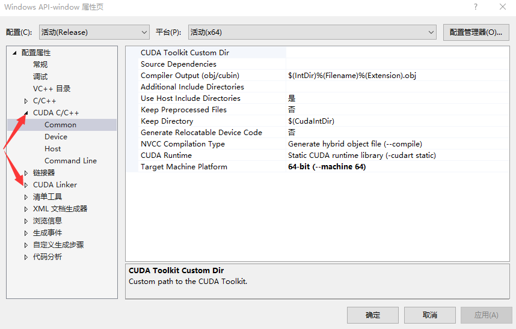

1、直接在新建工程的时候选择CUDA，这样的工程既能编译C++也能编译CU
2、在已有的C++工程上添加CUDA编译环境
右键工程-->生成依赖项-->生成自定义-->勾选CUDA 9.0
这时右键工程属性，发现多了两个关于CUDA的属性

点击CUDA C/C++下的Common，将默认的32-bit（--machine 32）改为 64-bit (--machine 64)
然后加入CUDA代码，运行发现找不到 dll 文件
我们需要引入dll文件的路径
右键工程属性，点击调试，在环境中加入CUDA安装路径：D:\soft\Cuda9.0\Development\bin
至此CUDA编译环境配置好了。